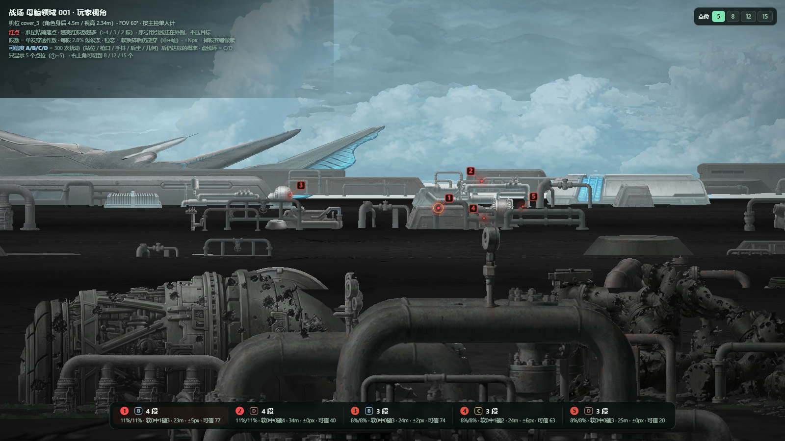
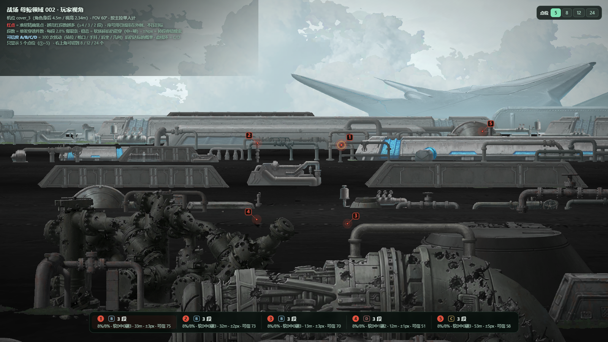
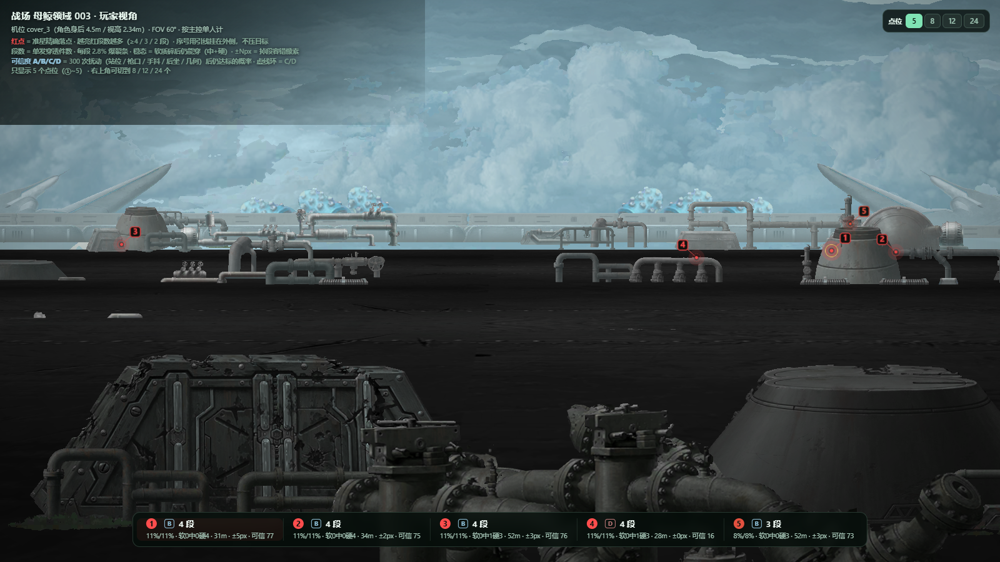

机位取自 cover_3.camera_position（角色身后 4.5m、视高 2.34m、沿 +z、FOV 60°），
图里 ①~⑤ 是首选、其后是补充（默认显示 5 个，可切到全部）。这个区域和沼泽丛林（H36-35）有三处实打实的区别，都改了口径。
原来的点位链是一套假设算到底：相机在 camera_position、
朝向 +z、竖直 FOV 60°、角色站阵位正中、枪口高 1.45m。verify_px.py 的
1000 次模拟只是在这套假设周围抖 —— 假设本身错了，抖一万次也只会把错误算得很自信。
所以这一轮换了六项独立复核，每项单独回答一个问题，互相不背书：
| 项 | 核的是什么 | 为什么必须单列 |
|---|---|---|
| A | 准星像素 → 射线 → 世界点 → 投回像素 | 查代码，不查假设。误差 >1px 就是投影写错了 |
| B | 容错锥：从枪口出发，四方向探到「开始掉段」的边界 | 完全绕开相机。只依赖枪口位置和场景几何，是唯一不受标定影响的指标 |
| C | 5 个阵位各自重算，含遮挡截断 | 玩家不会正好站在基准阵位。这是原算法漏掉的一层 |
| D | 相机俯角 −6°…+6° 全域重投影 | meta 明确写着俯角由运行时 Cinemachine 驱动 —— 唯一没有实证的参数 |
| E | 20:9 / 21:9 / 16:10 / 4:3 下的像素位置 | 手机和模拟器不都是 16:9。纵向 FOV 固定时，横向坐标会整体漂 |
| F | 首击物体在屏幕上占多少像素 | 8×6px 的东西玩家根本认不出来 —— 这是「照图打偏」最朴素的原因 |
per_slot 没做遮挡截断，所以页面上「全阵位」的说法是高估的
—— 这一版已修正，按阵列出的数都是截断后的。| 图 | 场景 | ①~⑤ 平均锥宽 px |
等级分布（S/A/B/C/D） | 明细 |
|---|---|---|---|---|
| mw001 | 母鲸领域 mw001 | 3.9 | A3 B3 C5 D4 | |
| mw002 | 母鲸领域 mw002 | 3.8 | A3 B9 C3 D9 | |
| mw003 | 母鲸领域 mw003 | 2.3 | S1 A4 B7 C6 D6 |
| 图·号 | 稳态 段 | 锥宽 px | 阵位 可用 |
可用 阵位/总 | 首击物体 | 比例 漂移px | 等级 | 问题 |
|---|---|---|---|---|---|---|---|---|
| mw001·1 | 4 | 4.7 | 5/5 | motherwhalefield dn pip… 屏宽 136px · 23m | 32 | B | — | |
| mw001·2 | 4 | 0.3 | 5/5 | motherwhalefield dm pip… 屏宽 180px · 34m | 61 | D | 锥宽0.3px | |
| mw001·3 | 3 | 3.5 | 3/5 | motherwhalefield dn pip… 屏宽 160px · 24m | 69 | B | — | |
| mw001·4 | 3 | 9.5 | 5/5 | motherwhalefield dn pip… 屏宽 136px · 24m | 63 | B | — | |
| mw001·5 | 3 | 1.5 | 4/5 | motherwhalefield dn pip… 屏宽 180px · 25m | 89 | D | 锥宽1.5px；挡:cover_4 | |
| mw001·6 | 3 | 2.3 | 4/5 | motherwhalefield dn pip… 屏宽 118px · 25m | 114 | D | 宽屏漂114px | |
| mw001·7 | 2 | 7.9 | 2/5 | motherwhalefield dn pip… 屏宽 313px · 14m | 244 | C | 仅2/5阵位；挡:cover_4；宽屏漂244px | |
| mw001·8 | 2 | 5.2 | 5/5 | motherwhalefield dm mac… 屏宽 119px · 41m | 186 | A | 宽屏漂186px | |
| mw001·9 | 2 | 4.7 | 2/5 | motherwhalefield dn pip… 屏宽 84px · 26m | 140 | C | 仅2/5阵位；宽屏漂140px | |
| mw001·10 | 2 | 3.8 | 2/5 | motherwhalefield dn pip… 屏宽 180px · 28m | 135 | C | 仅2/5阵位；挡:cover_2；宽屏漂135px | |
| mw001·11 | 2 | 5.4 | 5/5 | motherwhalefield dn box… 屏宽 180px · 24m | 11 | A | — | |
| mw001·12 | 2 | 6.5 | 2/5 | motherwhalefield dn mac… 屏宽 292px · 9m | 83 | C | 仅2/5阵位；挡:cover_2 | |
| mw001·13 | 2 | 2.8 | 1/5 | motherwhalefield dm pip… 屏宽 116px · 36m | 108 | D | 仅1个阵位能用；挡:cover_4,cover_5；宽屏漂108px | |
| mw001·14 | 2 | 4.6 | 2/5 | motherwhalefield dn pip… 屏宽 252px · 35m | 251 | C | 仅2/5阵位；宽屏漂251px | |
| mw001·15 | 2 | 13.0 | 4/5 | motherwhalefield dn mac… 屏宽 292px · 9m | 41 | A | 挡:cover_2 | |
| mw002·1 | 3 | 2.6 | 4/5 | motherwhalefield dn pip… 屏宽 54px · 32m | 40 | C | 挡:cover_2 | |
| mw002·2 | 3 | 5.5 | 5/5 | motherwhalefield dn pip… 屏宽 139px · 32m | 34 | B | — | |
| mw002·3 | 3 | 5.1 | 4/5 | motherwhalefield dn mac… 屏宽 55px · 13m | 39 | B | 挡:cover_2 | |
| mw002·4 | 3 | 1.1 | 2/5 | motherwhalefield dn pip… 屏宽 231px · 12m | 41 | D | 锥宽1.1px；仅2/5阵位；挡:cover_2 | |
| mw002·5 | 3 | 4.9 | 4/5 | motherwhalefield dn mac… 屏宽 148px · 53m | 157 | B | 挡:cover_2；宽屏漂157px | |
| mw002·6 | 3 | 0.3 | 5/5 | motherwhalefield dn pip… 屏宽 163px · 42m | 203 | D | 锥宽0.3px；宽屏漂203px | |
| mw002·7 | 2 | 4.4 | 3/5 | motherwhalefield dn mac… 屏宽 195px · 34m | 81 | B | — | |
| mw002·8 | 2 | 7.5 | 3/5 | motherwhalefield dn pip… 屏宽 175px · 15m | 88 | B | 挡:cover_2,cover_4 | |
| mw002·9 | 2 | 11.8 | 4/5 | motherwhalefield dn hal… 屏宽 103px · 14m | 62 | A | 挡:cover_2 | |
| mw002·10 | 2 | 12.1 | 3/5 | motherwhalefield dn pip… 屏宽 279px · 17m | 192 | B | 挡:cover_2,cover_4；宽屏漂192px | |
| mw002·11 | 2 | 3.8 | 5/5 | motherwhalefield dn pip… 屏宽 137px · 47m | 234 | B | 宽屏漂234px | |
| mw002·12 | 2 | 8.7 | 4/5 | motherwhalefield dn pip… 屏宽 227px · 15m | 156 | A | 挡:cover_4；宽屏漂156px | |
| mw002·13 | 2 | 2.9 | 5/5 | motherwhalefield dm pip… 屏宽 161px · 71m | 235 | C | 宽屏漂235px | |
| mw002·14 | 2 | 4.4 | 5/5 | motherwhalefield dm pip… 屏宽 116px · 50m | 130 | B | 宽屏漂130px | |
| mw002·15 | 2 | 3.2 | 5/5 | motherwhalefield dn mac… 屏宽 48px · 46m | 245 | C | 宽屏漂245px | |
| mw002·16 | 2 | 2.4 | 5/5 | motherwhalefield dm pip… 屏宽 217px · 68m | 199 | D | 宽屏漂199px | |
| mw002·17 | 2 | 6.3 | 1/5 | motherwhalefield dn mac… 屏宽 195px · 20m | 12 | D | 仅1个阵位能用；挡:cover_2 | |
| mw002·18 | 2 | 1.9 | 3/5 | motherwhalefield dn pip… 屏宽 54px · 42m | 182 | D | 锥宽1.9px；宽屏漂182px | |
| mw002·19 | 2 | 6.8 | 3/5 | motherwhalefield dn pip… 屏宽 227px · 13m | 105 | B | 宽屏漂105px | |
| mw002·20 | 2 | 2.0 | 2/5 | motherwhalefield dn pip… 屏宽 279px · 20m | 256 | D | 仅2/5阵位；挡:cover_2,cover_4；宽屏漂256px | |
| mw002·21 | 2 | 1.4 | 5/5 | motherwhalefield dm pip… 屏宽 121px · 48m | 89 | D | 锥宽1.4px | |
| mw002·22 | 2 | 1.8 | 4/5 | motherwhalefield dm pip… 屏宽 121px · 50m | 113 | D | 锥宽1.8px；挡:cover_2；宽屏漂113px | |
| mw002·23 | 2 | 8.7 | 4/5 | motherwhalefield dn pip… 屏宽 227px · 13m | 87 | A | 挡:cover_2 | |
| mw002·24 | 2 | 1.0 | 1/5 | motherwhalefield dn mac… 屏宽 55px · 19m | 227 | D | 锥宽1.0px；仅1个阵位能用；挡:cover_2,cover_4；宽屏漂227px | |
| mw003·1 | 4 | 4.3 | 4/5 | motherwhalefield dn hal… 屏宽 139px · 31m | 178 | B | 宽屏漂178px | |
| mw003·2 | 4 | 0.4 | 5/5 | motherwhalefield dn hal… 屏宽 139px · 34m | 212 | D | 锥宽0.4px；宽屏漂212px | |
| mw003·3 | 4 | 2.9 | 5/5 | motherwhalefield dm box… 屏宽 64px · 52m | 201 | C | 宽屏漂201px | |
| mw003·4 | 4 | 0.2 | 3/5 | motherwhalefield dn pip… 屏宽 155px · 28m | 106 | D | 锥宽0.2px；宽屏漂106px | |
| mw003·5 | 3 | 3.6 | 5/5 | motherwhalefield dm pip… 屏宽 92px · 52m | 188 | B | 宽屏漂188px | |
| mw003·6 | 3 | 2.8 | 5/5 | motherwhalefield dm pip… 屏宽 78px · 48m | 167 | C | 宽屏漂167px | |
| mw003·7 | 3 | 6.0 | 3/5 | motherwhalefield dm pip… 屏宽 139px · 30m | 112 | B | 宽屏漂112px | |
| mw003·8 | 3 | 5.0 | 4/5 | motherwhalefield dn box… 屏宽 51px · 26m | 71 | A | 挡:cover_2 | |
| mw003·9 | 3 | 2.9 | 5/5 | motherwhalefield dm pip… 屏宽 196px · 46m | 79 | C | — | |
| mw003·10 | 3 | 2.0 | 4/5 | motherwhalefield dn pip… 屏宽 131px · 25m | 42 | D | — | |
| mw003·11 | 3 | 10.0 | 4/5 | motherwhalefield dn pip… 屏宽 339px · 15m | 203 | A | 挡:cover_4；宽屏漂203px | |
| mw003·12 | 3 | 1.2 | 3/5 | motherwhalefield dn pip… 屏宽 411px · 14m | 136 | D | 锥宽1.2px；挡:cover_2,cover_4；宽屏漂136px | |
| mw003·13 | 2 | 9.4 | 5/5 | motherwhalefield dn mac… 屏宽 153px · 25m | 90 | S | — | |
| mw003·14 | 2 | 7.2 | 4/5 | motherwhalefield dn par… 屏宽 32px · 36m | 238 | A | 挡:cover_4；宽屏漂238px | |
| mw003·15 | 2 | 4.0 | 1/5 | motherwhalefield dn mac… 屏宽 153px · 30m | 162 | D | 仅1个阵位能用；挡:cover_2,cover_4；宽屏漂162px | |
| mw003·16 | 2 | 3.2 | 5/5 | motherwhalefield dm pip… 屏宽 90px · 43m | 54 | C | — | |
| mw003·17 | 2 | 8.8 | 3/5 | motherwhalefield dn pip… 屏宽 87px · 28m | 141 | B | 宽屏漂141px | |
| mw003·18 | 2 | 2.6 | 5/5 | motherwhalefield dn pip… 屏宽 223px · 30m | 173 | C | 宽屏漂173px | |
| mw003·19 | 2 | 9.3 | 4/5 | motherwhalefield dn pip… 屏宽 365px · 17m | 214 | A | 挡:cover_4；宽屏漂214px | |
| mw003·20 | 2 | 3.7 | 5/5 | motherwhalefield dn pip… 屏宽 126px · 26m | 118 | B | 宽屏漂118px | |
| mw003·21 | 2 | 9.0 | 3/5 | motherwhalefield dn pip… 屏宽 339px · 17m | 257 | B | 挡:cover_2,cover_4；宽屏漂257px | |
| mw003·22 | 2 | 4.1 | 3/5 | motherwhalefield dn pip… 屏宽 184px · 16m | 189 | B | 挡:cover_2,cover_4；宽屏漂189px | |
| mw003·23 | 2 | 2.9 | 2/5 | motherwhalefield dn pip… 屏宽 184px · 15m | 161 | C | 仅2/5阵位；挡:cover_2,cover_4；宽屏漂161px | |
| mw003·24 | 2 | 2.2 | 4/5 | motherwhalefield dn pip… 屏宽 365px · 19m | 250 | D | 挡:cover_4；宽屏漂250px |
锥宽 = 准星偏离这颗像素多少还能保住标称段数（四方向取最小，与相机无关）； 阵位可用 = 5 个阵位里仍能打到 ≥2 段的数量（绿格＝达标记段数，浅绿＝≥2 段，红＝打不到）； 比例漂移 = 换成 21:9 宽屏后，这颗红点在画面里横向跑多远（红字 ≥50px，基本指不到东西）。
还有一个没法在本项目里验证的因素：敌人、队友、
残骸的实体遮挡。它们不在场景 assembly 里，只在实战中出现 ——
这会让「纸面段数」在实际战斗中打折，且打折幅度与站位有关。
红点是按 1600×900（16:9） 画的。Unity 的 fieldOfView=60
是竖直视场，所以换宽高比时纵向不变、横向往中心收。输入你的实际分辨率，直接拿换算后的坐标：
红字＝这一档下红点会跑偏 >50px，说明那颗点在你的屏幕上已经指不到原来那件东西了 —— 这种情况请直接按「首击物体」去找，别按像素数。
V10.5 把每个点拆开评估。但爆裂条是一条 100% 的共享进度条，单点再强也只贡献一次。 受击物碎掉就从场景消失，而且跨点位共享 —— A 打碎的件，B 就打不到。所以点位必须按一条 轮换路径来算，而不是各自独立的分数。
本区域没有 soft，只有 medium 500 / hard 1000。每次命中扣多少血取决于
hpdamage_limit=30，表里没写，两种都合法：
母鲸领域的目标几乎全在 12~30m 的管线串上，一条线串 3~4 件很常见 —— 这让单发收益高，但也让点位之间高度重叠（都打同一批管线）。下表给出可破坏物池， 池子 × 280 就是这张图靠打地形能拿到的上限。
| 战场 | 点位 | 池子 件数 | 覆盖率 | 池子 =充能 | A 一枪碎 | B 上限 30 | 贪心 省 |
|---|
A 模式每个点只用 1 发，所以「发数 = 点数」；B 模式才需要看点位数。
4 段 / 3 段是一组假设下的确定解：相机在 camera_position、俯角 0、
角色正好站在阵位中心、枪口高 1.45m。这些里有一半是推断。做法是把同一颗目标重打 300 次，
每次随机抖站位（±0.30m）、枪口高度（±0.15m）、手抖（±2~4px）、后坐（0.12°）、几何（1.5px），
走完整链路后看还剩几段 —— 得到的是分布，不是一个数。
可信度 = 100 × (0.60·达标率 + 0.25·可用率 + 0.15·P10/标称)； A ≥80 可直接照打、B ≥68 偶尔掉 1 段、 C ≥52 条件性可用、D <52 不建议依赖。 表格里的「达标率」= 300 次里仍拿到标称段数的比例，「均 X 段」= 期望段数。
| 战场 | ① 可信度 | ① 达标率 | 等级分布 | 本图最稳的点 | 模拟量 |
|---|---|---|---|---|---|
| mw001 | B77 | 68% | 1 号 77 | 300 次 · 14s | |
| mw002 | B73 | 67% | 7 号 77 | 300 次 · 20s | |
| mw003 | B77 | 68% | 13 号 82 | 300 次 · 18s | |
| 合计 | — | — | — | — |
pipeline 管线串），
一条线上串 3~4 件很常见，但串得越长越吃站位 —— 3 段的达标率明显高于 4 段。
另外全区域软质为 0，所以「稳态 = 首轮」，打碎了不影响的优势在这里用不上。
上一版在枪口角度上选点，隐含假设「准星指哪、枪口就打哪」。实际是
准星像素 → 相机射线 → 命中点 Pc → 枪口瞄准 Pc，相机在身后 4.5m、右偏 1.2m、高 0.89m，
与枪口不是同一点。母鲸领域目标更近（12~30m 居多），视差实测中位 3.8~4.3°、最大 15.2°，
这个误差在 v9 里被整个忽略了。
遮挡也算进去了：static_object（不可破坏的机械/岩石）与地形会截断射线。
这条改动的直接后果是 mw002 原先那条「4 段」不成立 —— 它在 39.9m 打中管线后，
40.6m 就有一台 sn_machine01_01 挡住，后面 3 件（54~64m）实际打不到，真实只有 1 段。
pitch −3~+20 就够。pitch −22~+22，否则下层机械整片扫不到。sbg_motherwhalefieldbmf002_001 场景（bmf = boss mother field）。
noncol_object（装饰）、15 个 cover_object（自家掩体）、5 个 ground。kill_m/e/c/b）。有用户反馈：①（yaw −40°）右边那条横向管线上也能充能，速率还可以。反查属实 ——
该方向 yaw −34.5° / pitch +6.0°，单发 3 段（8.4%）、首击 48.5m，命中
dm_pipeline_106_06_h + dm_machine02_h + dm_pipeline_12_01_h 三件硬质，
五阵位齐射 12 段。v10 复算后它是本图的 ⑩（px(297, 388)，±2px），
因为点数默认只显示 5 个，要把顶部切到「12 个」才看得到它。
修正后每张图从 10 个点增到 12 个，沼泽丛林（H36-35）的五张同样重跑。 本图新增的 ⑪（−34.5/+6.0，48.5m）与 ⑫（−30.75/+6.0，31.2m）正好是「同方位、不同纵深」的一对： 一个打远处管线串、一个打近处管件，命中集合只重叠 1 件 —— 以前被当成同一个点，其实两条都该标。
数字是该区间内能做到的最高段数，小字是区间内的可破坏物件数。这个区域的点位分布比沼泽丛林散得多 —— 左右两侧都有 4 段的带，不像沼泽丛林集中在中央。
| 战场 | -45~-30° | -30~-15° | -15~+0° | +0~+15° | +15~+30° | +30~+45° |
|---|---|---|---|---|---|---|
| mw00139 章 | 25件 | 310件 | 34件 | 45件 | 46件 | 23件 |
| mw00240 章 | 28件 | 36件 | 38件 | 31件 | 313件 | 47件 |
| mw003备用 | 412件 | 410件 | 32件 | 33件 | 39件 | 49件 |
覆盖 ±45°，即整块屏幕（水平半角 45.7°）。
| 项 | 取值 | 来源 |
|---|---|---|
| 区域 | motherwhalefield | CampaignChapterTable：39 章 → fcbg_motherwhalefield_001，40 章 → _002 |
| 战场场景 | sbg_motherwhalefield_001 / 002 / 003 | core/chunk/store.cdb 定点提取 |
| 机位 / 朝向 | cover_N 的 camera_position；rotation = identity（沿 +z，俯仰 0°） | 阵位预制体，5 阵位布局与沼泽丛林完全一致 |
| 视高 / 后撤 | y = 0（地面 −2.34）→ 2.34m；角色在 z + 4.5、右偏 1.2m | camera_position vs character_position |
| 竖直视场 | 60°（near 0.1 / far 300） | spotcameracontrol |
| 扫描范围 | yaw ±46°，pitch −22~+22°，步长 0.25° | 按本区域目标俯角分布扩展 |
| 每段充能 | 2.8%（280 能量 / 10000） | ulti_gauge_shot_hit × burst_energy_max |
| 战场 | 段数 | %/轮 | 软/中/硬 | 首击 | 聚焦 段数 | 最近命中物 |
|---|---|---|---|---|---|---|
| mw00139 章 | 4 | 11.2% | 013 | 23m | 17 | dn_pipeline_105_03_h |
| mw00240 章 | 3 | 8.4% | 003 | 32m | 12 | dn_pipeline_09_03_h |
| mw003备用 | 4 | 11.2% | 004 | 31m | 12 | dn_halfcone_03_h |
均为各战场 ① 号点。001/002 按章节顺序对应 39/40 章 —— 客户端没有「关卡 → 战场」映射表
（spot_id 由服务端下发），这一对应是推定，不是拆包实证。

camera_position = (0.6, 0.00, 0.0) ·
视高 2.34m（地面 y = −2.34）· 沿 +z · 竖直 FOV 60° · 角色位于画面底部| 号 | 段数 | %/轮 | 软/中/硬 | 首击 | 容错 px 横/纵 | 可信度 | 聚焦 段数 | 特性 | c1 | c2 | c3 | c4 | c5 |
|---|---|---|---|---|---|---|---|---|---|---|---|---|---|
| 1 | 4 | 11.2% | 013 | 23m | 0.3 | B77 | 17 | 高稳态5/5阵位 | 4 | 3 | 4 | 3 | 3 |
| 2 | 4 | 11.2% | 004 | 34m | 0.0 | D40 | 17 | 高稳态窄窗5/5阵位 | 4 | 3 | 4 | 3 | 3 |
| 3 | 3 | 8.4% | 003 | 24m | 0.4 | B74 | 9 | 高稳态窄窗3/5阵位 | 2 | 2 | 3 | 1 | 1 |
| 4 | 3 | 8.4% | 012 | 24m | 0.6 | C63 | 13 | 高稳态5/5阵位 | 2 | 3 | 3 | 3 | 2 |
| 5 | 3 | 8.4% | 003 | 25m | 0.1 | D20 | 10 | 高稳态窄窗4/5阵位 | 3 | 2 | 3 | 0 | 2 |
| 6 | 3 | 8.4% | 003 | 25m | 0.3 | D33 | 11 | 高稳态窄窗4/5阵位 | 1 | 2 | 3 | 2 | 3 |
| 7 | 2 | 5.6% | 002 | 14m | 1.5 | B73 | 6 | 近景2/5阵位 | 1 | 2 | 2 | 0 | 1 |
| 8 | 2 | 5.6% | 002 | 41m | 0.3 | B73 | 10 | 远景全阵位 | 2 | 2 | 2 | 2 | 2 |
| 9 | 2 | 5.6% | 011 | 26m | 0.5 | C63 | 7 | 2/5阵位 | 1 | 1 | 2 | 1 | 2 |
| 10 | 2 | 5.6% | 002 | 28m | 0.3 | C60 | 6 | 2/5阵位 | 2 | 0 | 2 | 1 | 1 |
| 11 | 2 | 5.6% | 011 | 24m | 0.4 | C55 | 10 | 全阵位 | 2 | 2 | 2 | 2 | 2 |
| 12 | 2 | 5.6% | 002 | 9m | 0.5 | C54 | 6 | 近景2/5阵位 | 1 | 0 | 2 | 2 | 1 |
| 13 | 2 | 5.6% | 002 | 36m | 0.9 | D49 | 4 | 窄窗1/5阵位 | 1 | 1 | 2 | 0 | 0 |
| 14 | 2 | 5.6% | 002 | 35m | 0.9 | D37 | 7 | 2/5阵位 | 1 | 2 | 2 | 1 | 1 |
| 15 | 2 | 5.6% | 002 | 9m | 4.3 | D37 | 8 | 近景4/5阵位 | 2 | 0 | 2 | 2 | 2 |
段数 = 单发穿透的可破坏物件数（主控一人，每段 2.8% 爆裂条）；此区域没有软质受击点，
所以段数不会随碎裂下降。聚焦 = 小美人鱼火力聚焦下 5 人合计。
容错 横/纵（v12 实测，绕开相机）：准星偏多少像素还能保住标称段数。
横向大、纵向小是常态；纵向 <2.5px 的标红，那是「能打中但稳不住」。
c1~c5 = 各阵位单发段数，红色的 0 = 那个阵位被自家或相邻高掩体挡住（这一版修掉了原先漏算遮挡的问题）。
①~⑤ 首选，⑥ 起为补充（左侧竖线）：换了阵位、被挡住时可以顶上；
页面顶部可切换「显示几个」。

camera_position = (0.6, 0.00, 0.0) ·
视高 2.34m（地面 y = −2.34）· 沿 +z · 竖直 FOV 60° · 角色位于画面底部| 号 | 段数 | %/轮 | 软/中/硬 | 首击 | 容错 px 横/纵 | 可信度 | 聚焦 段数 | 特性 | c1 | c2 | c3 | c4 | c5 |
|---|---|---|---|---|---|---|---|---|---|---|---|---|---|
| 1 | 3 | 8.4% | 003 | 32m | 0.2 | B73 | 12 | 高稳态窄窗4/5阵位 | 3 | 0 | 3 | 3 | 3 |
| 2 | 3 | 8.4% | 003 | 32m | 0.3 | C66 | 11 | 高稳态5/5阵位 | 2 | 2 | 3 | 2 | 2 |
| 3 | 3 | 8.4% | 003 | 13m | 0.3 | C65 | 11 | 高稳态近景4/5阵位 | 3 | 0 | 3 | 3 | 2 |
| 4 | 3 | 8.4% | 012 | 12m | 0.1 | D51 | 7 | 高稳态窄窗近景2/5阵位 | 2 | 0 | 3 | 1 | 1 |
| 5 | 3 | 8.4% | 003 | 53m | 0.4 | C58 | 10 | 高稳态远景4/5阵位 | 3 | 0 | 3 | 2 | 2 |
| 6 | 3 | 8.4% | 003 | 42m | 0.0 | D15 | 11 | 高稳态窄窗远景5/5阵位 | 2 | 2 | 3 | 2 | 2 |
| 7 | 2 | 5.6% | 002 | 34m | 0.5 | B77 | 8 | 3/5阵位 | 1 | 2 | 2 | 2 | 1 |
| 8 | 2 | 5.6% | 011 | 15m | 0.6 | B74 | 6 | 近景3/5阵位 | 2 | 0 | 2 | 0 | 2 |
| 9 | 2 | 5.6% | 011 | 14m | 1.0 | B73 | 8 | 抗手抖近景4/5阵位 | 2 | 0 | 2 | 2 | 2 |
| 10 | 2 | 5.6% | 002 | 17m | 0.7 | B76 | 6 | 抗手抖近景3/5阵位 | 2 | 0 | 2 | 0 | 2 |
| 11 | 2 | 5.6% | 002 | 47m | 0.3 | B71 | 10 | 远景全阵位 | 2 | 2 | 2 | 2 | 2 |
| 12 | 2 | 5.6% | 002 | 15m | 0.5 | B69 | 8 | 抗手抖近景4/5阵位 | 2 | 2 | 2 | 0 | 2 |
| 13 | 2 | 5.6% | 002 | 71m | 0.2 | B69 | 10 | 远景全阵位 | 2 | 2 | 2 | 2 | 2 |
| 14 | 2 | 5.6% | 011 | 50m | 0.3 | C62 | 10 | 远景全阵位 | 2 | 2 | 2 | 2 | 2 |
| 15 | 2 | 5.6% | 002 | 46m | 0.2 | C62 | 10 | 远景全阵位 | 2 | 2 | 2 | 2 | 2 |
| 16 | 2 | 5.6% | 002 | 68m | 0.1 | C61 | 10 | 窄窗远景全阵位 | 2 | 2 | 2 | 2 | 2 |
| 17 | 2 | 5.6% | 002 | 20m | 0.6 | C54 | 5 | 1/5阵位 | 1 | 0 | 2 | 1 | 1 |
| 18 | 2 | 5.6% | 002 | 42m | 0.1 | D44 | 9 | 窄窗远景3/5阵位 | 3 | 2 | 2 | 1 | 1 |
| 19 | 2 | 5.6% | 011 | 13m | 0.4 | C52 | 8 | 抗手抖近景3/5阵位 | 1 | 1 | 2 | 2 | 2 |
| 20 | 2 | 5.6% | 002 | 20m | 0.6 | D46 | 5 | 窄窗2/5阵位 | 2 | 0 | 2 | 0 | 1 |
| 21 | 2 | 5.6% | 002 | 48m | 1.0 | D33 | 10 | 窄窗远景全阵位挡1段 | 2 | 2 | 2 | 2 | 2 |
| 22 | 2 | 5.6% | 002 | 50m | 0.8 | D49 | 8 | 远景4/5阵位 | 2 | 0 | 2 | 2 | 2 |
| 23 | 2 | 5.6% | 011 | 13m | 0.5 | D38 | 9 | 窄窗近景4/5阵位 | 2 | 0 | 2 | 2 | 3 |
| 24 | 2 | 5.6% | 002 | 19m | 0.1 | D17 | 4 | 窄窗1/5阵位 | 1 | 0 | 2 | 0 | 1 |
段数 = 单发穿透的可破坏物件数（主控一人，每段 2.8% 爆裂条）；此区域没有软质受击点，
所以段数不会随碎裂下降。聚焦 = 小美人鱼火力聚焦下 5 人合计。
容错 横/纵（v12 实测，绕开相机）：准星偏多少像素还能保住标称段数。
横向大、纵向小是常态；纵向 <2.5px 的标红，那是「能打中但稳不住」。
c1~c5 = 各阵位单发段数，红色的 0 = 那个阵位被自家或相邻高掩体挡住（这一版修掉了原先漏算遮挡的问题）。
①~⑤ 首选，⑥ 起为补充（左侧竖线）：换了阵位、被挡住时可以顶上；
页面顶部可切换「显示几个」。

camera_position = (0.6, 0.00, 0.0) ·
视高 2.34m（地面 y = −2.34）· 沿 +z · 竖直 FOV 60° · 角色位于画面底部| 号 | 段数 | %/轮 | 软/中/硬 | 首击 | 容错 px 横/纵 | 可信度 | 聚焦 段数 | 特性 | c1 | c2 | c3 | c4 | c5 |
|---|---|---|---|---|---|---|---|---|---|---|---|---|---|
| 1 | 4 | 11.2% | 004 | 31m | 0.2 | B77 | 12 | 高稳态4/5阵位 | 2 | 3 | 4 | 2 | 1 |
| 2 | 4 | 11.2% | 004 | 34m | 0.0 | B75 | 15 | 高稳态窄窗5/5阵位 | 2 | 4 | 4 | 3 | 2 |
| 3 | 4 | 11.2% | 013 | 52m | 0.2 | B76 | 18 | 高稳态远景5/5阵位 | 3 | 4 | 4 | 4 | 3 |
| 4 | 4 | 11.2% | 013 | 28m | 0.0 | D16 | 11 | 高稳态窄窗3/5阵位 | 1 | 1 | 4 | 3 | 2 |
| 5 | 3 | 8.4% | 003 | 52m | 0.2 | B74 | 17 | 高稳态远景全阵位 | 3 | 3 | 3 | 4 | 4 |
| 6 | 3 | 8.4% | 003 | 48m | 0.2 | B72 | 12 | 高稳态窄窗远景5/5阵位 | 2 | 2 | 3 | 3 | 2 |
| 7 | 3 | 8.4% | 003 | 30m | 0.4 | C56 | 9 | 高稳态3/5阵位挡1段 | 2 | 2 | 3 | 1 | 1 |
| 8 | 3 | 8.4% | 012 | 26m | 0.4 | D51 | 12 | 高稳态4/5阵位 | 3 | 0 | 3 | 3 | 3 |
| 9 | 3 | 8.4% | 003 | 46m | 0.3 | D44 | 11 | 高稳态窄窗远景5/5阵位 | 2 | 2 | 3 | 2 | 2 |
| 10 | 3 | 8.4% | 003 | 25m | 0.4 | D43 | 10 | 高稳态窄窗4/5阵位 | 2 | 2 | 3 | 1 | 2 |
| 11 | 3 | 8.4% | 012 | 15m | 0.6 | D49 | 12 | 高稳态抗手抖近景4/5阵位 | 3 | 3 | 3 | 0 | 3 |
| 12 | 3 | 8.4% | 012 | 14m | 0.2 | D34 | 9 | 高稳态窄窗近景3/5阵位 | 3 | 0 | 3 | 0 | 3 |
| 13 | 2 | 5.6% | 002 | 25m | 0.5 | A82 | 10 | 全阵位 | 2 | 2 | 2 | 2 | 2 |
| 14 | 2 | 5.6% | 011 | 36m | 3.3 | B77 | 8 | 4/5阵位 | 2 | 2 | 2 | 0 | 2 |
| 15 | 2 | 5.6% | 002 | 30m | 0.2 | C66 | 4 | 1/5阵位 | 1 | 0 | 2 | 0 | 1 |
| 16 | 2 | 5.6% | 002 | 43m | 1.1 | C66 | 10 | 窄窗远景全阵位挡1段 | 2 | 2 | 2 | 2 | 2 |
| 17 | 2 | 5.6% | 011 | 28m | 0.5 | C64 | 8 | 3/5阵位 | 1 | 2 | 2 | 2 | 1 |
| 18 | 2 | 5.6% | 020 | 30m | 0.1 | C58 | 10 | 窄窗全阵位 | 2 | 2 | 2 | 2 | 2 |
| 19 | 2 | 5.6% | 011 | 17m | 0.5 | C56 | 8 | 抗手抖近景4/5阵位 | 2 | 2 | 2 | 0 | 2 |
| 20 | 2 | 5.6% | 011 | 26m | 1.1 | D47 | 10 | 窄窗全阵位 | 2 | 2 | 2 | 2 | 2 |
| 21 | 2 | 5.6% | 011 | 17m | 0.5 | D46 | 6 | 抗手抖近景3/5阵位 | 2 | 0 | 2 | 0 | 2 |
| 22 | 2 | 5.6% | 011 | 16m | 0.2 | D47 | 6 | 近景3/5阵位 | 2 | 0 | 2 | 0 | 2 |
| 23 | 2 | 5.6% | 002 | 15m | 0.4 | D36 | 5 | 窄窗近景2/5阵位 | 1 | 0 | 2 | 0 | 2 |
| 24 | 2 | 5.6% | 011 | 19m | 2.1 | D36 | 8 | 窄窗4/5阵位 | 2 | 2 | 2 | 0 | 2 |
段数 = 单发穿透的可破坏物件数（主控一人，每段 2.8% 爆裂条）；此区域没有软质受击点，
所以段数不会随碎裂下降。聚焦 = 小美人鱼火力聚焦下 5 人合计。
容错 横/纵（v12 实测，绕开相机）：准星偏多少像素还能保住标称段数。
横向大、纵向小是常态；纵向 <2.5px 的标红，那是「能打中但稳不住」。
c1~c5 = 各阵位单发段数，红色的 0 = 那个阵位被自家或相邻高掩体挡住（这一版修掉了原先漏算遮挡的问题）。
①~⑤ 首选，⑥ 起为补充（左侧竖线）：换了阵位、被挡住时可以顶上；
页面顶部可切换「显示几个」。